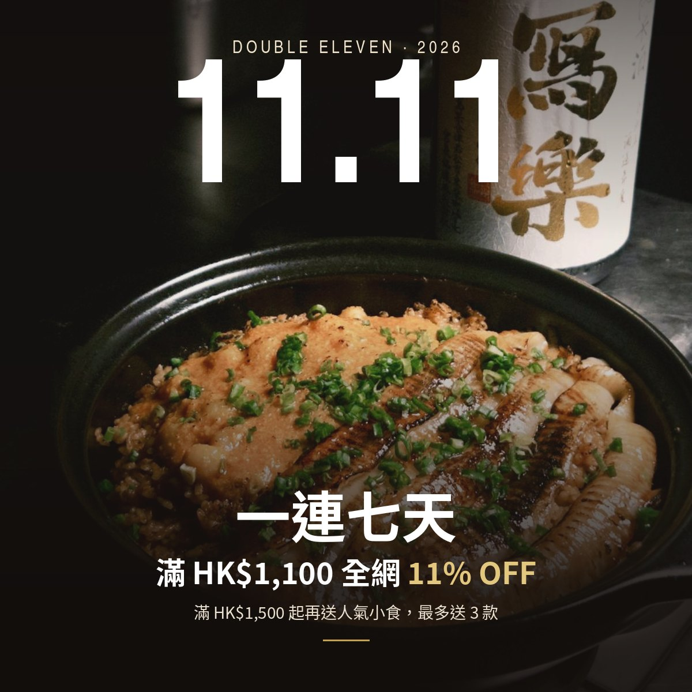
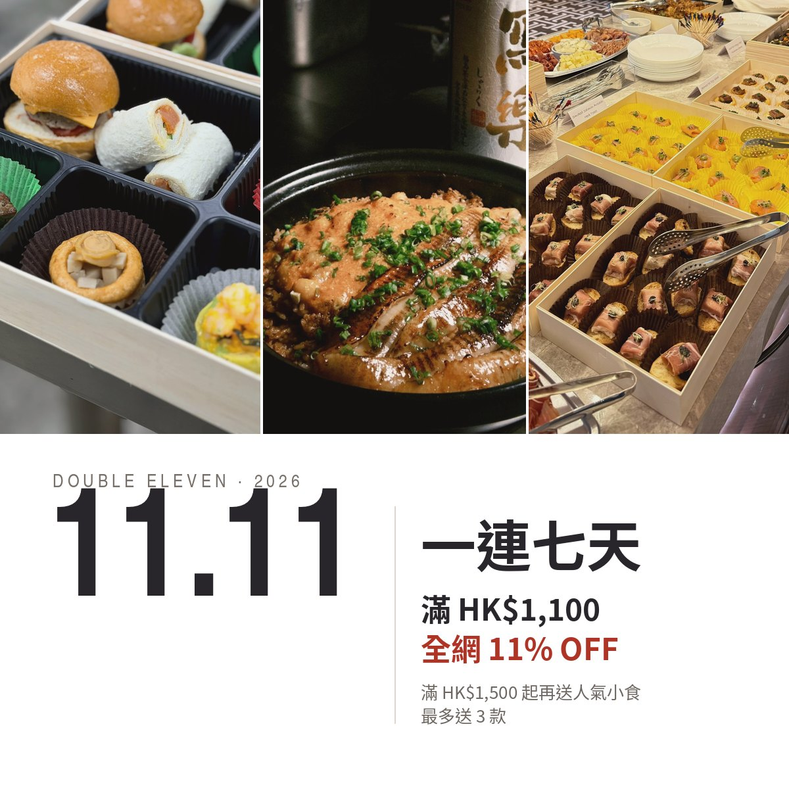
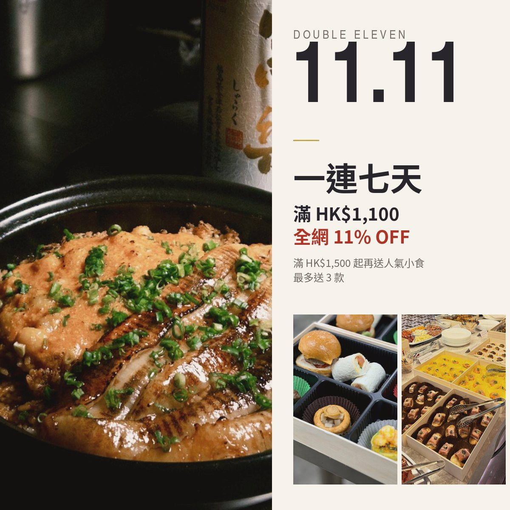

雙 11 KV：參考 Kimpton 餐廳頁風格
Kimpton 風格重點：相片鋪滿、直角無框、窄身大寫標題、大量留白、相片色調統一（暖、偏暗）。三張自家相已統一調色。文字內容不變。設計亦參考 Four Seasons Sydney。
Option K1全出血主圖
煲仔飯相鋪滿成個 KV，上下漸暗，白色窄身大字直接壓喺相上面；「11% OFF」用金色。最似 Kimpton 嘅 hero banner，最有氣氛。

Option K2上相下字
上半部三張相直角拼成全闊（中間白幼隙）；下半部白底，左邊窄身大字「11.11」，右邊直線分隔，再寫優惠內容。最乾淨、最似餐廳頁嘅編排。

Option K3雜誌格
左邊煲仔飯大直圖；右邊米色欄，由上至下寫標題同優惠，底部兩張細圖。最有雜誌感。

免費圖片Pexels 候選（可作背景或主圖）
撳圖會開 Pexels 原頁。揀中邊張話我知，我先下載再套入 KV。預覽要連網先見到圖。